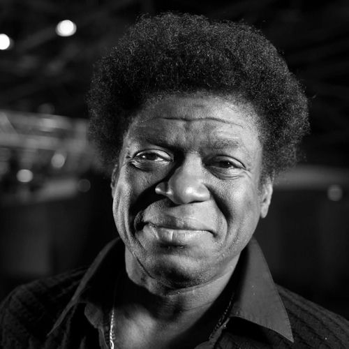

Charles Bradley
Charles Edward Bradley was an American funk and soul singer. After years of obscurity and a part-time music career, Bradley came to prominence in the early 2000s. His performances and recording style were consistent with the revivalist approach of his main label Daptone Records, celebrating the feel of funk and soul from the 1960s and 1970s. One review said he "echoes the evocative delivery of Otis Redding".
Complete Discography & Tracklists (13)
2011 No Time for Dreaming (The Instrumentals) 🎵 12 Tracks
2011 No Time For Dreaming 🎵 14 Tracks
2013 Victim of Love 🎵 11 Tracks
2016 Changes 🎵 11 Tracks
2017 Changes (The Instrumentals) 🎵 9 Tracks
2018 Black Velvet 🎵 9 Tracks
2018 Whatcha Doing (To Me) / Strike Three 🎵 2 Tracks
2019 Black Velvet (The Instrumentals) 🎵 11 Tracks
2019 Black Velvet (Stripped-Down Mixes) 🎵 5 Tracks
2019 Lonely as You Are 🎵 0 Tracks
No tracks registered.
2021 The Daptone Super Soul Revue Live at the Apollo 🎵 0 Tracks
No tracks registered.